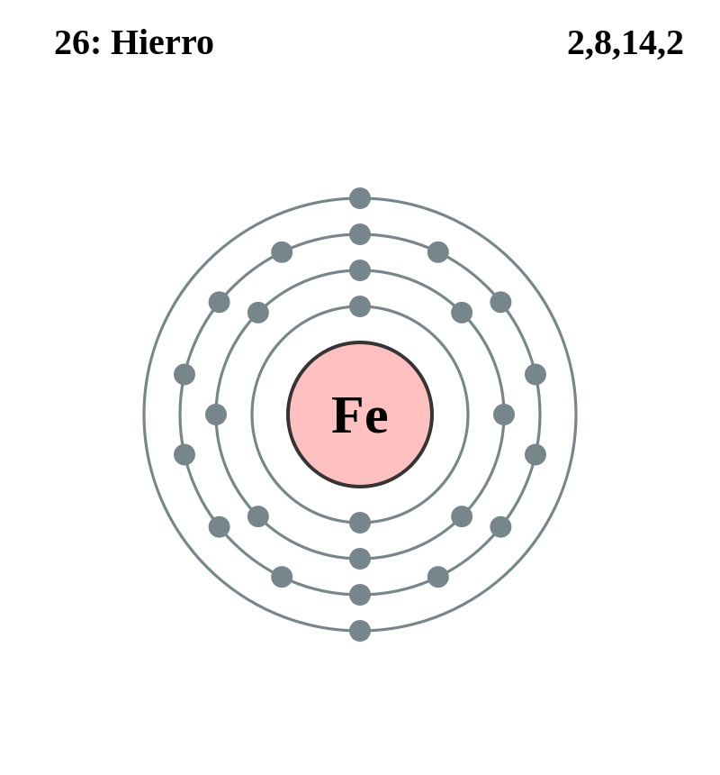

|
|
||
|
HIERRO El hierro es un metal relativamente abundante que se encuentra en el Sol y otras estrellas, y en los meteoritos. Es el cuarto elemento más abundante en la corteza terrestre por peso. El hierro puro es muy reactivo y se corroe rápidamente. Tiene cuatro formas alotrópicas o ferritas; la forma alfa es magnética, pero el magnetismo desaparece en la forma beta. El hierro es duro, frágil, bastante fusible y se utiliza para producir acero y otras aleaciones. El hierro común se compone de cuatro isótopos y se sabe que existen otros diez isótopos. El hierro es vital para las funciones de las plantas y animales, y se encarga de transportar oxígeno en la hemoglobina. |
 |
DATOS Número Atómico: 26 Peso Atómico: 55.85 Electronegatividad: 1.83 Configuración Electrónica: [Ar] 3d⁶ 4s² Estados de Oxidación: +3,2 No. de Electrones de Valencia: 8 |